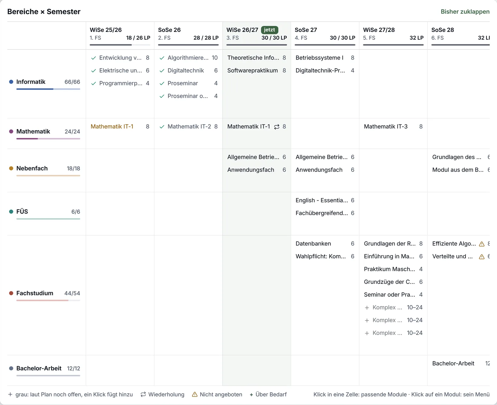

Folia · Mein Studium · Gesamtplan · erste Runde, 3. November 2026
Der Gesamtplan als Fortschritt
Heute ist der Gesamtplan eine Tabelle: Bereiche mal Semester, in jeder Zelle die Namen der Module untereinander. Du möchtest ihn eher wie einen Fortschritts-Tracker, so wie die Roadmap von Star Citizen: jeder Bereich eine Zeile mit Balken über die Zeit, man sieht, wie weit man ist, und trotzdem jedes Modul, mindestens mit seinem Kürzel. Wo ein Bereich ein Semester lang nichts hat, ist sein Balken unterbrochen. Hier sind drei Konzepte dafür, alle mit demselben Studium: Informatik B.Sc. im 3. Fachsemester.
„Hey claude baue mal bitte den Gesamtplan so um, so dass es sich eher wie ein progress tracker verhält. Halt so ähnlich wie bei star citizen oder so. Mach mal ein paar konzepte, wie man das visuell Schöner machen kann. Idealer weise trotzdem noch so, dass man die module sehen kann. Also zummindest die abkürzungen.“
„Ja und die progress bars können auch so sein, dass sie unterbrochen sind, wenn man mal ein semester kein modul belegt.“ — du, heute
Was alle drei teilen
Bereiche als Zeilen, Semester als Spalten, wie heute. Die Zeit läuft nach rechts, das laufende Semester ist grün markiert.
Unterbrochen, wo nichts ist: Hat ein Bereich in einem Semester kein Modul, hört sein Balken dort auf und fängt im nächsten Semester mit Modulen wieder an.
Jedes Modul mit Kürzel: EvS, AuP, ThI, wie dein Studiengang sie nennt und wie der Stundenplan sie schon zeigt. Den vollen Namen gibt es beim Zeigen und im Menü.
Je voller, desto weiter: bestanden voll in der Farbe des Bereichs, was gerade läuft kräftig, Geplantes hell, was der Plan noch offen hat gestrichelt. Nicht bestanden ist rot mit ✕, eine Wiederholung trägt ↻, nicht angeboten ⚠, über Bedarf ist schraffiert wie in den Balken der Übersicht.
Was der Plan offen hat, steht gestrichelt dort, wo es als Nächstes passt, ein Klick plant es ein. Ein Platzhalter, den ein Modul füllt, steht nicht mehr als zweite Zeile daneben: Das Modul trägt ihn („für Anwendungsfach“).
Was heute geht, bleibt: Ein Klick auf ein Modul öffnet sein Menü, Ziehen verschiebt es, ein Klick auf eine leere Stelle bietet „Modul hinzufügen“ für Bereich und Semester, „Bisher“ klappt die vergangenen Semester zu.
Ausgangslage
Was heute ist
Dasselbe Studium im heutigen Gesamtplan: Informatik B.Sc., seit dem WiSe 2025/26, jetzt im 3. Fachsemester. Die ersten beiden Semester sind vorbei, Mathematik IT-1 ist im ersten nicht bestanden und wird jetzt wiederholt.

Der Gesamtplan auf canary (Folia 1.61.1), „Bisher“ aufgeklappt, in einem Fenster von 1440 px.
Namen statt Fortschritt. Jede Zelle ist eine Liste von Namen, die meisten abgeschnitten („Allgemeine Betrie…“, „Grundlagen des …“). Wie weit du bist, steht nur links in den dünnen Balken.
Keine Zeit. Wann ein Bereich läuft und wann er pausiert, sieht man nur an leeren Zellen. Dass Mathematik im SoSe 27 aussetzt, fällt nicht auf.
Doppelt gezählt? Ein Platzhalter, den ein Modul füllt, steht als eigene Zeile darunter: „Anwendungsfach 6“ unter BWL I liest sich wie 12 LP, gezählt sind 6.
Ungleich hoch. Eine Zeile ist so hoch wie ihre längste Zelle: Das Fachstudium braucht neun Zeilen, die Bachelor-Arbeit eine.
Abgeschnitten. Bei 1440 px passt das SoSe 28 nicht mehr ganz hinein („32 LI“).
Konzept A
ARoadmap
So nah an Star Citizen wie möglich. Zugeklappt ist jeder Bereich ein Balken über die Semester, gebaut aus einem Stück je Modul mit seinem Kürzel, jedes so breit wie sein Anteil an den LP des Semesters. Mit ▸ klappst du einen Bereich auf, dann hat jedes Modul seine eigene Zeile, wie die Lieferungen eines Teams. Die grüne Linie ist heute, der 3. November.
Zeig auf ein Stück für seinen Namen, klick es für sein Menü („Als bestanden markieren“ füllt es). ▸ klappt einen Bereich auf, das Gestrichelte im WiSe 27/28 plant ein, was noch fehlt.
Was man sieht
Informatik läuft vom 1. bis zum 4. FS durch. Mathematik setzt im SoSe 27 aus, dort ist ihr Balken unterbrochen, ebenso das Nebenfach im WiSe 27/28.
Die Stücke sind so breit wie ihre LP im Semester: AuP mit 10 LP ist mehr als doppelt so breit wie Pro mit 4.
Mathematik ist aufgeklappt: MIT1 im WiSe 25/26 rot mit ✕, ein Pfeil führt zur Wiederholung im WiSe 26/27.
Im WiSe 27/28 hat das Fachstudium mehr Module, als Kürzel hineinpassen. Dort steht „4 Module · 24 LP“, gestrichelt daneben die 10 LP, die noch fehlen. Aufgeklappt steht jedes einzeln da.
Wie es sich verhält
▸ klappt einen Bereich auf. „Alle aufklappen“ und „Alle zuklappen“ stehen über dem Plan, Betula merkt sich, was offen ist.
Ein Klick auf ein Stück öffnet das Menü des Moduls, wie heute. Ziehen verschiebt es in ein anderes Semester.
Ein Klick auf eine leere Stelle bietet „Modul hinzufügen“ für diesen Bereich und dieses Semester.
Worauf zu achten ist
Zugeklappt passen bei sechs Semestern etwa vier Kürzel in ein Semester, mehr werden zu „n Module“.
Aufgeklappt wird ein großer Bereich lang: Das Fachstudium hat acht Zeilen.
In einer Zeile gibt es zwei Ziele: ▸ klappt auf, der Name öffnet weiter den Dialog des Bereichs.
Konzept B
BBausteine
Jedes Modul ist ein Baustein mit seinem Kürzel, so breit wie seine Leistungspunkte, und ein Semester ist 30 LP breit. Die Bausteine eines Bereichs bilden seinen Balken, eine Schiene führt ihn durch die Semester. So siehst du auf einen Blick, wie viel ein Bereich in einem Semester ausmacht und wie voll ein Semester ist.
Zeig auf einen Baustein für seinen Namen, klick ihn für sein Menü. „Bisher aufklappen“ zeigt die ersten beiden Semester, dann scrollt der Plan seitwärts.
Was man sieht
Das Programmierpraktikum mit 4 LP ist ein schmaler Baustein, die Bachelor-Arbeit mit 12 LP ein breiter.
Im Kopf jedes Semesters ein Lineal mit einer Marke bei 30 LP. Das WiSe 27/28 geht mit 32 LP ein Stück darüber.
Die Schiene verbindet die Bausteine eines Bereichs. Im SoSe 27 hat Mathematik keinen, dort ist sie unterbrochen.
Gestrichelt: die 10 LP der Komplexe, die dem Fachstudium noch fehlen, so breit wie 10 LP.
Wie es sich verhält
Nichts klappt auf: Jedes Modul steht immer da. Zeigen nennt den vollen Namen, ein Klick öffnet das Menü.
„Bisher“ ist zugeklappt, denn Bausteine brauchen Breite. Aufgeklappt scrollt der Plan seitwärts.
Ziehen, „Modul hinzufügen“ und das Gestrichelte wie in A.
Worauf zu achten ist
Ein 4-LP-Modul ist 24 px breit. Lange Kürzel wie ABWL1 passen erst ab 6 LP, sonst wird die Schrift kleiner.
Es gibt keine Linie für heute, denn in einem Semester zählen hier LP, keine Wochen.
Breite heißt hier LP. Bei Star Citizen ist Breite Zeit.
Konzept C
CLinien
Wie ein Liniennetzplan: Jeder Bereich fährt auf seiner Linie durch die Semester, jedes Semester mit Modulen ist eine Haltestelle, darunter stehen die Kürzel. Bis heute ist die Linie kräftig, danach hell. Wo ein Bereich ein Semester lang nichts hat, endet sie und fängt neu an.
Zeig auf ein Kürzel für seinen Namen, klick es für sein Menü.
Was man sieht
Eine Haltestelle ist voll mit ✓, wenn dort alles bestanden ist, halb, solange das Semester läuft, offen, wenn es geplant ist, und rot mit ✕, wenn dort etwas nicht bestanden wurde.
Mathematik endet nach dem WiSe 26/27 und fährt im WiSe 27/28 weiter.
Die Bachelor-Arbeit ist eine kurze Linie mit einer Haltestelle ganz am Ende.
Wie es sich verhält
Ein Klick auf ein Kürzel öffnet das Menü des Moduls, Ziehen verschiebt es.
Das Gestrichelte plant ein, eine leere Stelle bietet „Modul hinzufügen“, wie in A.
Worauf zu achten ist
Die Zeilen sind höher, weil die Kürzel unter der Linie umbrechen: Das Fachstudium braucht zwei Reihen.
Die LP sieht man nur beim Zeigen.
Verspielter als der Rest von Betula.
Die Fälle nebeneinander
Ausschnitte von zwei oder drei Semestern, jeder Fall in A, B und C. Wo Beispiel steht, ist das Studium dafür abgewandelt.
Im Vergleich
A Roadmap
B Bausteine
C Linien
Module sehen
Kürzel im Balken, aufgeklappt jedes in seiner Zeile
jedes immer, als Baustein
Kürzel unter der Linie
Wie weit bin ich
voll, kräftig, hell, gestrichelt, dazu die Linie „heute“
voll, kräftig, hell, gestrichelt
Linie kräftig bis heute, Haltestellen voll oder offen
Leistungspunkte
als Anteil im Semester
Breite gleich LP, Lineal bis 30
nur beim Zeigen
Lücken
Balken unterbrochen
Schiene unterbrochen
Linie endet und fängt neu an
Platz
zu flach, auf lang
flach, braucht Breite
höher
Wie Star Citizen
sehr nah
der Aufbau, nicht die Breite
ein eigener Weg
Aufwand
mittel bis groß: Aufklappen, eine Zeile je Modul
mittel
mittel
Empfehlung: A, mit dem Lineal aus B
A verhält sich wie der Tracker, den du gezeigt hast: Zu ist es eine ruhige Übersicht mit einem Balken je Bereich, auf zeigt es jedes Modul. Das passt zu einem Studium, das man meist überblickt und manchmal im Detail plant.
Die Kürzel stehen im Balken. Ist ein Semester zu voll für sie, steht dort „4 Module“, wie bei Star Citizen „51 deliverables“, und ein Klick klappt den Bereich auf.
Die Linie „heute“ macht aus der Tabelle eine Zeitleiste. Links davon ist erledigt, rechts kommt noch.
Aus B das Lineal im Kopf der Semester: eine Marke bei 30 LP statt des Balkens, der heute nur am Plan misst. Dann fällt ein schweres Semester auf, auch im 5. und 6. FS, für die der Plan nur eine Summe hat.
C ist das schönste Bild, aber es zeigt am wenigsten: keine LP, höhere Zeilen. Seine Haltestellen könnten später aufs Handy passen.
Gebaut wird erst nach deinem Feedback. Zum Bauen gehört in grid.rs ein Raster mit Pixeln statt Zellen, die Kürzel des Studiengangs, die der Stundenplan schon lädt, und das Datum des Semesters für die Linie „heute“.
Fragen an dich
Jeweils mit meinem Vorschlag. Ein „passt“ reicht, wo du zustimmst.
Welches Konzept? A, B oder C, oder ein Stück aus einem anderen dazu?Vorschlag: A, mit dem Lineal aus B.
Zu oder auf? Wie sollen die Bereiche beim ersten Öffnen stehen?Vorschlag: alle zu, danach so, wie du sie verlassen hast.
Bisher? Heute sind die vergangenen Semester beim Öffnen zugeklappt. Mit Balken sind sie schmal und zeigen, was du schon geschafft hast.Vorschlag: aufgeklappt, „Bisher zuklappen“ bleibt.
Was der Plan offen hat: ein gestricheltes Stück mit den fehlenden LP („+10“) statt dreier grauer Zeilen „Komplex … 10–24“?Vorschlag: ja, aufgeklappt stehen die Zeilen des Plans einzeln.
Ein Urlaubssemester unterbricht alle Balken, die Spalte sagt „Urlaub“.Vorschlag: ja, wie im Fall unten.
Module über zwei Semester: 493 Module dauern laut Beschreibung zwei Semester. Heute steht so ein Modul in einem Semester; ein Balken könnte über beide gehen.Vorschlag: später, es braucht mehr als den Gesamtplan.
Und das Handy? Der Gesamtplan ist heute nur am Rechner.Vorschlag: eine eigene Runde, wenn das Konzept steht.
Daten: canary vom 3. November 2026, Informatik B.Sc. (PO 2008) mit den Kürzeln des Studiengangs, begonnen im WiSe 2025/26. Ausgedacht ist nur, was „Beispiel“ trägt. Gebaut ist davon nichts. folia/design/gesamtplan/konzepte.html